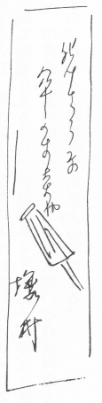
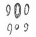
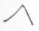
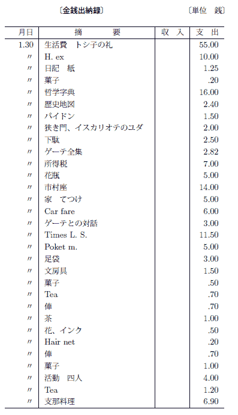

一月五日
（月曜）一月十九日
（月曜）一月三十日
（金曜）祖母上［＃中條運］のメモリーとして短いものを書き始む、『新小説』に送るつもり。
一月三十一日
（土曜）かなりとびとびにはなるがやはり書くものがないと淋しい。
二月七日
（土曜）二月九日
（月曜）この前の月、吉・菊［＃中村吉右衛門、尾上菊五郎］連合のをＹと二人で見たので、同じ場所のため或感情あり。彼女もさそって来たかった。
菊五郎相変らずうまし。かえってから、母上と、菊、吉、の芸風について話がはずんだ。
二月十三日
（金曜）
〔欄外に〕「イスカリオテのユダ」。
二月十五日
（日曜）
〔欄外に〕
アンドレーエフの「イスカリオテのユダ」。訳のわるい故か、アンドレーエフの作として、あの独特の簡明さ、クリアー・カットを感じられず。ユダの性格の見かた、焦点はよいが、もう一歩どこか物足りず。ビブリカル・テーマはあのような作家にとっても困難なものと思われる。
アンドレーエフの「イスカリオテのユダ」。訳のわるい故か、アンドレーエフの作として、あの独特の簡明さ、クリアー・カットを感じられず。ユダの性格の見かた、焦点はよいが、もう一歩どこか物足りず。ビブリカル・テーマはあのような作家にとっても困難なものと思われる。
二月十六日
（月曜）野上さんでの話。武者小路のこと、鼓のこと、「ゲエテとの対話」について。現代人ということ――夏目漱石先生の息のこと。Mr. ホワイマントのこと。
二月十八日
（水曜）二月十九日
（木曜）二月二十日
（金曜） 双方から熱せられ困って居るらし。どうなることか。父上少し疲れた故か老人に見え淋しかった。1877 と年号のついて居るフランスの剣（兵士用）で作った暖炉用火カキ、その他一揃を買って来られた。父上は年号がついて居るのに興味をもたれたらしいが趣味の点から見るとよろしくなし。
双方から熱せられ困って居るらし。どうなることか。父上少し疲れた故か老人に見え淋しかった。1877 と年号のついて居るフランスの剣（兵士用）で作った暖炉用火カキ、その他一揃を買って来られた。父上は年号がついて居るのに興味をもたれたらしいが趣味の点から見るとよろしくなし。二月二十一日
（土曜）おそく起き、食事をして居たら俊ちゃん来。四時頃出かけ、途中で松や、瓜生、本やによりエッケルマン「ゲエテとの対話」第二巻、ベルグソン「笑の研究」を買う。重い両手一杯の荷もつ。小石川にかえるつもりであったがＹ体わるく、あっちへゆかれないというので、牛込にかえる。かえったら、しょぼくない風で机に向って居た。やがて元気になり、夕飯の仕度をしてくれたが、おそくまで起きて居たのでおなかを減し困った。Ｙ、万国史、自分、「ゲエテとの対話」。
二月二十二日
（日曜）夜、Ｙにロシア語の稽古をして貰う。段々アルファベットだけ
Ｙはロシア語の万国史をよんで居る。
二月二十三日
（月曜）
〔欄外に〕
普通選挙案が上程された。政友本党が反対する。が、その反対にも上程の動機にも、双方、真の文化的情熱から生じる熱を欠いて居ること夥し。不快。日本の政治界の深さ大さの欠乏を著しく感ず。進んだ女はこんな政治やの仲間に入ることを却って恥とする位だろう。
普通選挙案が上程された。政友本党が反対する。が、その反対にも上程の動機にも、双方、真の文化的情熱から生じる熱を欠いて居ること夥し。不快。日本の政治界の深さ大さの欠乏を著しく感ず。進んだ女はこんな政治やの仲間に入ることを却って恥とする位だろう。
二月二十四日
（火曜）晴夜野上氏、石本氏に手紙を書く。野上さんへの手紙、フロから出たてだったので、うまくまとまらず、永い時間を費した。
なかなか寒し。
二月二十五日
（水曜）二月二十六日
（木曜）曇 寒い。
〔欄外に〕
仕事案外よく進み、三枚半。
仕事案外よく進み、三枚半。
二月二十七日
（金曜）二月二十八日
（土曜）晴
〔欄外に〕
二月下旬、春の先駆で天候不順。よく晴れて居るが北風激しく寒いこと夥し。昨夜の雪が、一吹き風が吹く毎にパアット吹雪のようにとびちって顔や肩にかかる。しかし雨だれの音はやさしい。道路表面がとけ下が凍って居る。
二月下旬、春の先駆で天候不順。よく晴れて居るが北風激しく寒いこと夥し。昨夜の雪が、一吹き風が吹く毎にパアット吹雪のようにとびちって顔や肩にかかる。しかし雨だれの音はやさしい。道路表面がとけ下が凍って居る。
三月一日
（日曜）折角よい家だのに、差配の家の工場、となりのおくれ髪どめ作りの工場にはさまれて居るのを発見。
〔欄外に〕
昨夜Ｙ、いろいろの話のことから、私に情熱は在るが愛の深さは自分より劣ると云った。
その言葉忘られず。
自分の結婚したやり方など全く情熱的であった。そしてそれを完成されなかったのは愛の不足と云えなくもない点あり。実に忘られない一句。
昨夜Ｙ、いろいろの話のことから、私に情熱は在るが愛の深さは自分より劣ると云った。
その言葉忘られず。
自分の結婚したやり方など全く情熱的であった。そしてそれを完成されなかったのは愛の不足と云えなくもない点あり。実に忘られない一句。
三月二日
（月曜）今夜でやっと片がついた。疲れたこと、疲れたこと。御話にならず。Ｙ、殆ど嘔吐を催す。自分もまけず劣らずだ。生憎右手の工場で電気のエンジンを廻し出し、そのブーブーという音頭に響きやり切れず。夕刻やんで
〔欄外に〕
心の問題を話しどうしてＹがＡでなかったかと悲し。この悲しみは深い。自分は、Ａにあれだけ傾倒した。Ｙだけの鋭さを若しＡが持って居てくれたら、私はよくなれ、互の生活に安ぜられたのであったのに。
心の問題を話しどうしてＹがＡでなかったかと悲し。この悲しみは深い。自分は、Ａにあれだけ傾倒した。Ｙだけの鋭さを若しＡが持って居てくれたら、私はよくなれ、互の生活に安ぜられたのであったのに。
三月三日
（火曜）
〔欄外に〕
二階日当よく廊下の籐椅子によりかかって居ると、春らしさにうっとりする程だ。ゆれる樹の葉に日の光る、麗 らかさがもう冬のとは違う。そのつややかさ。
二階日当よく廊下の籐椅子によりかかって居ると、春らしさにうっとりする程だ。ゆれる樹の葉に日の光る、
三月四日
（水曜）夜、三時すぎまでやる。十一枚。
Ｙ、今日は大活動。三越にゆき、私のためによいスタンドを買って来てくれる。ひどく光線の工合がよいので、ついつかれて居たのに机につき、あれだけやってしまった。
三月五日
（木曜）晴 大風仕事昼間六枚。こんどの部屋光りの工合、落付き工合実によい。ただ、となりで始終トタンをいじる音がするのは情けなし。但四時以後はすっかりしずかになって快し。
三月十一日
（水曜）今度は引越しや何かでごたついたので、苦しいことであった。
〔欄外に〕
頭がわるい！ 驚いた。一月間違えてつけるとは。
頭がわるい！ 驚いた。一月間違えてつけるとは。
三月十二日
（木曜）三宅さんに約束のもの、読売のたのまれもの、心がかり。いや。
三月十三日
（金曜）晴 寒 月のおカシをたべ、日本橋甚兵衛で夕食。（二人）Ｙ御自慢の若竹うまし。はももこりこりしたところがうまく満足した。銀座まで歩き、プレイガイドで邦楽座の二等二枚。Ｙ金のなる機という可笑しな、然し面白い貯金箱を見つけて買う。
月のおカシをたべ、日本橋甚兵衛で夕食。（二人）Ｙ御自慢の若竹うまし。はももこりこりしたところがうまく満足した。銀座まで歩き、プレイガイドで邦楽座の二等二枚。Ｙ金のなる機という可笑しな、然し面白い貯金箱を見つけて買う。
〔欄外に〕
毎日強い風。今日胸つき坂に出る路で改造の若者に会い、いそぐというので仕方なく往来に立ったまま、ざっと校正をした。
毎日強い風。今日胸つき坂に出る路で改造の若者に会い、いそぐというので仕方なく往来に立ったまま、ざっと校正をした。
三月十四日
（土曜）ラディオをすえつけたので皆、夕飯後は二時間ばかりそのために一室に集る。まだアンプリファイアがないので音が小さくかなり神経がつかれる。
泥棒の入った話で持ちきりであった。なかなかの豪胆もの。英男まで見たのだという。あの晩泊って居ないで助かった！
泊。眠るときＹどうして居るかと思う。若し泥が、私の居ないときに入りでもしたらＹのために可哀想と心配した。母上、一寸したことで、バターを注文して貰うことをたのんだら、Ｙの分までこっちでフタンするのはいやだからね、はっきりして置かないと、と云わる。情けなくなり、そのまま沈黙。母上はいつも私をかばうつもりで、私の純牛乳に水をわろうとするのだ。好意はわかるが、いや、いや。父上、おそく亢奮して帰宅。今議会へケンチク士法案を出したいとてアッセンして居る由、佐野利器が利己心からジャマするとフンガイして居られた。
三月十五日
（日曜）雨三月十七日
（火曜）晴
〔欄外に〕
賤ハタ、なみ、髪結新三、「カツオは半分貰ってゆく」有名な文句を始めて見たが、あれは、前あてでよろしからず、菊の新三、あすこで俄に痴呆となる。今月は大体に云って中の出来だ。
賤ハタ、なみ、髪結新三、「カツオは半分貰ってゆく」有名な文句を始めて見たが、あれは、前あてでよろしからず、菊の新三、あすこで俄に痴呆となる。今月は大体に云って中の出来だ。
三月十八日
（水曜）父上、しきりに泊ってゆけとすすめられ、ことわるに苦しかった。Ｙは待って居ようし、するので意を決し、十時出。丁度三時すぎから三河島日暮里に大火。家を出たら、嵐模様で白雲がドンドン空をかけ、焔赤くこれにうつり物凄く人出も多く、不安であった。Ｙ一歩先にかえって居たよし。画を見せ、ほめられ満足。
三月十九日
（木曜）信用を失った。Ｙ彼女の荷もつをしらべろという。いやなことだ。実にいやなことだ。が、無くなったものを皆あれもそうか、これもそうかと思うのはなおいやとＹ主張する。そうも云える。Ｙ見る。細かい、一寸したもの出て来る。変な気持がした。あとで、すっかり荷もつを入れかえて、又元の女中部屋に戻す（四畳に来て居たから）のり使いからかえり荷を勿論すぐあけただろう。どんな気がしたか。自分ならもう二目と主人は見られないと思う。辛い。のり、割に平然として居る。あとで少し泣いて居たらし。一つ家に、信じないもの同士のすむ恐ろしさ。つくづくいやで居心地わるかった。三月二十日
（金曜）晴程なく、小山という叔母、のりをつれて来る。Ｙのかえる迄三時間近くあいてをす。人に会いつづけでうんざり。のりをつれてかえる。のり揚々としてかえった。Ｙと感情的に打ち合うものがあったらしい。Ｙも気に入らないとなると、あまり大ヨウでないからな。夜、今度の『改造』の作品について話が出、やや感情的になった。Ｙは、趣味として私がとったような行動を結婚に対した場合きらう。私が、大変リファインして居るようで居てずぼらな肉的なところがあるらしい、ということ等。或点これは自分も肯定する。然し、私は其ばかりではない。決して。ただ彼女と私との違った点はこうだ――彼女は散々デタラメをした、私以上、然しそれをちゃんとデタラメと知ってやって居た。私は客観すると、デタラメでも何でも自分がムキだとデタラメと思わず、意気込んでやった。その違い。
〔欄外に〕
眼鏡出来て来る。
眼鏡出来て来る。
三月二十一日
（土曜）晴三月二十二日
（日曜）晴「ゲーテとの対話」、当時のドイツがオペラ上演にどれだけ未だ拙であったか知れ面白く感じた。エッケルマン、善良にイタリーのオペラの上手さに感服して居る。そのドイツとイタリーが現代では逆だ。テムペラメントの違いはおそろしいと考える。
三月二十三日
（月曜）細雨スエ子、珍しいのではしゃぎ、かつなれないので、どこにゆくのでも私のあとをついて来る。眠るのに四ジョウにする。初めて泊った記憶、彼女が大きくなってからも思い出すだろうか。
三月二十四日
（火曜）曇チャイコフスキーのユーモレスク、フィールドのノクターンをきき動かされた。特にユーモレスクに。
Ｙ、まちかねて居、殆ど不キゲン。私が居ないと、火が消えたようになるらしい。考え、自分、ＹならＹを待ちかねて居てかえって来られるとすぐうれしくなり、待って居た間のいやなことなど忽ち忘れてしまう。Ｙなど、すぐさっとそう行かない。又これを書き乍ら、考う。自分は今こうしてＹの淋しがりを公平に認めて居るが、Ａとの生活の間何故それは出来なかったのだろうか。一つの原因は、Ａに超人間的なつよさ、堂々さ、寛大さを求めたということ、二つには、彼がその淋しさやなにかを率直に云ってくれず何だか変にして居るのがいやで、彼に同情を当然持つべきときさえ持ち得なかった点。彼も苦しい心持を多く味ったのだ！
三月二十五日
（水曜）成程、一生懸命に書いて居ることは判る。密度にムラなし。然しカンジンのところで、何か足りず、描写は平凡になってしまい、何も感銘出来ず。夜、『婦人公論』に送る自分のスケッチを描く。この二日ばかり「ゲーテとの対話」中デモニッシュ（悪霊的）ということについてゲーテの云って居ること、思いつづけて居る形だ。この力、この力、このデモニッシュなものに支配されること――支配される丈の素因の内在して居るか居ないかが、芸術家にとっては大問題だ。
デモンにつかれたものに丈ある感覚――芸術に対しての触手――、なりひびき揺り動かす何ものか。
三月二十六日
（木曜）曇
〔欄外に〕
エッケルマン「メヒストフェレスにも悪霊的なところがありはしませんか」
ゲーテ「ない。メヒストフェレスはあまり消極的である。しかし悪霊は全然積極的な活動力の中に顕われる」
エッケルマン「メヒストフェレスにも悪霊的なところがありはしませんか」
ゲーテ「ない。メヒストフェレスはあまり消極的である。しかし悪霊は全然積極的な活動力の中に顕われる」
三月二十七日
（金曜）母上、西洋間に居、私の『改造』に出したものについて、彼此云われ、父上まで一緒に怒って少し不合理なことを云われた。情けなし。
母、どれ程澄子が憎いのか、私に気に入らないところがあると、澄子を引合いに出される。恐ろしい程だ。天の心から見たら、一人の人間にあれ程憎悪をもって居ると云うこと丈も余り祝福はされまい。Ｋと、三時頃までＨの態度について話す。そのとき、私の云ったこと。
Ｓに対する傾倒はＨに対する反動ではないか。Ｓは十六歳、夢中な Passion、情慾にたわわだ。Ｈは現実的で思慮して居ながら自分の感情に負けて居るはがゆさがあるから。故にＳだけとしたら案外なのではないか等。
〔欄外に〕今日御祖母上の百ヵ日。
三月二十八日
（土曜）野上さんの小説「参」短篇三つで女性の生活――性的影響のもとにある心――を描こうとしたものだが、愛がこもって居ないので全然失敗だ。「助教授Ｂの幸福」にあったようなものが見えないでもない。わるい。三を
三月二十九日
（日曜）雨三月三十日
（月曜）『改造』を一寸よむ。Ｙ、会。自分、石本、野上氏に永い手紙をかき、Ａに送る離婚届をかく。なれないもの故一寸したところで間違え、ひどく手間どった。淋しい仕事、淋しい仕事。Ａのことを思うと、二人の心足らぬものと自分達（Ａと自分）を思い悲しい。本当に心足らぬもの。
三月三十一日
（火曜）四月一日
（水曜） 立
立四月二日
（木曜） の自己陶酔に対する批評、野上さん自身の作の態度、私の作の態度等。「おせっかい」をよんでの感想なのだが、里見が中戸川二人に対するだけの鋭い反省を自己に加えず、たださばけたおじさんとなって納っていく心持になって居ることを、野上さんはっきり批評し、大いにそうと思う。彼女が昨今、自分が作をするときああいう客観的態度のみをとるのは、いつか自分のことについて書くとき、その冷やかさ、ようしゃなさを、自分にふりむけたいからだ、という。このこと、あとまで頭にのこる。心がけとしては立派だ。しかし芸術の作品は心がけによって得た冷やかさ、鋭さ、反省のみで完成されるか？ その一方に傾きすぎた修業のため、他面に、芸術家として大切な何ものかを失いはして居ないか。
の自己陶酔に対する批評、野上さん自身の作の態度、私の作の態度等。「おせっかい」をよんでの感想なのだが、里見が中戸川二人に対するだけの鋭い反省を自己に加えず、たださばけたおじさんとなって納っていく心持になって居ることを、野上さんはっきり批評し、大いにそうと思う。彼女が昨今、自分が作をするときああいう客観的態度のみをとるのは、いつか自分のことについて書くとき、その冷やかさ、ようしゃなさを、自分にふりむけたいからだ、という。このこと、あとまで頭にのこる。心がけとしては立派だ。しかし芸術の作品は心がけによって得た冷やかさ、鋭さ、反省のみで完成されるか？ その一方に傾きすぎた修業のため、他面に、芸術家として大切な何ものかを失いはして居ないか。彼女近眼で眼鏡をかけない理由、
（一）、くっきりした輪廓は失う代り絵画的に明暗と飽和した色彩とを見るため、
（二）、第一印象が鋭く、芸術的になるため、
（三）、抽象世界が豊富になるため、等。
野上さんの言葉で忘られないもの
「夫婦生活で一番いけないのは不自然になることですよ」これは結婚したものでなければわからない心持だ。
四月三日
（金曜）夜、三宅さんに上る原稿別な小品を思いつけ、書き始む。三時過まで。
四月四日
（土曜）四月五日
（日曜）大根河岸の方から京橋に出二人で歩いて居ると四辻のところを丹野さん、網野さん歩いてゆくのに会う。すぐ四人でつれ立ちこれからどうしようということになり、築地小劇場にゆく。二度目なり。ゴーゴリの「検察官」をやって居る。古い時代の作らしく五場あるが、もっと短くもなる。それは原作についてだが、演出上から云うと、市長、並夫人ひどく下手。汐見、臆病なのらくら息子から急に上手に検察官を気どるところ、もう少し心的なモティブをどこかで示すとなおよかったろう。大体ここでも、喜劇という既定概念にとらわれて皆が誇張してやって居るのがいやであった。正劇としてやって居る間にしみ出る皮肉滑稽こそ面白いのに。小山内氏でもこの位の監督ブリなのかな。
四月六日
（月曜）Ａは我ままも陰性にし、憤りも陰性にし、ついつい妙なことになってしまったのだ。
四月七日
（火曜）一九二〇年からのを。それからその次の年にかけて。心の変りかたがよくわかる。苦しんで居たのだな。実に。あの時分の沢山の涙を思い出す。情けなし。この頃のような生活さえ人生にはあるのに。――絶えず岩に打つかって居る波のように切ない、不満な生活であった。今、私は生活を一緒にするものとして、Ｙの心持にいろいろ人としての欠点は認めるが、興味の一致、理解し得るよろこび、心を偽らないのびやかさは充分もつ。その点幸福を感じて居る。
〔欄外に〕
秋庭俊彦氏来。眼、鼻から頬にかけて深いたて皺がぐっとあり、暗い、暗い感じの人。Ｙの母違いの弟［＃湯浅貞雄］上京。Ｙ「私の父の息子が来るそうだ」
秋庭俊彦氏来。眼、鼻から頬にかけて深いたて皺がぐっとあり、暗い、暗い感じの人。Ｙの母違いの弟［＃湯浅貞雄］上京。Ｙ「私の父の息子が来るそうだ」
四月八日
（水曜）いやな、いやな天気なり。低気アツ。私は頭がからりとせず目がまわりそうに不快だ。
四月九日
（木曜）よい月。硝子戸をとおし、部屋に流れる光。日記をつけようとして見たら満月とある。成程！
この間築地小劇場に行ったとき、「皇帝ジョーンス」と、アンドレエフの「黒き仮面」を買って来た。自分はジョーンスが自身の黒人の血にまけて、反徒に征服されてしまうところ、面白いと思った。Ｙ、アンドレエフの方をさきによみ、くらべものにならず、という。自分、これは二つの異種のもので、アンドレエフのは、精神、オーネルの方のは本能、をとりあつかったものとして見るべきと思う。作とし、「皇帝ジョーンス」にはむだ、やや平凡なところが多くはあるが。
四月十日
（金曜）四月十一日
（土曜）
〔欄外に〕
Ｙ、アンドレエフ進みうれしそうに快活だ。庭ばかり見て、桜の咲いたことを知らず、隣の庭を見てもう花時分と知った。桜は私もＹも余りこのまない。
Ｙ、アンドレエフ進みうれしそうに快活だ。庭ばかり見て、桜の咲いたことを知らず、隣の庭を見てもう花時分と知った。桜は私もＹも余りこのまない。
四月二十一日
（火曜）仕事、やっとかかれる。一終り
〔欄外に〕
ボリソフより来た本の中にチェホフが妻君にやった手紙あり、中に、妻を、ソバアカ、ソバアカと愛して呼んで居る。ヤー チェベア、ソバアカ、オーチェン リブリュー〔私はお前を大変愛している〕。
ボリソフより来た本の中にチェホフが妻君にやった手紙あり、中に、妻を、ソバアカ、ソバアカと愛して呼んで居る。ヤー チェベア、ソバアカ、オーチェン リブリュー〔私はお前を大変愛している〕。
四月二十二日
（水曜）夕方母上来。無電が到頭久野氏死亡をつたえた由。到頭、到頭！ 深い感慨あり。今幸仕事が出来て居るからよいがさもないと自分はかなり打撃を受けたと思う。子供の時分の思い出が甦る。始めて母上と行ったとき、あの部屋、教則本、ヴェートウヴェンのソナタ。
「どうして結婚なんぞしたんです？ 馬鹿な！」
英男さんが世話して作ったフランス水仙、黄紅のチュウリップ母上持って来て下さる。九州へ父上と行かれるかもしれぬ由。ゆくべしゆくべし。一緒に行って置かれるうちに行ってお置きなさい。
〔欄外に〕
Ｙの妹［＃神沢フミ］の良人神沢という人嗜眠性脳炎の由。Ｙ、夕食後心痛しあわれであった。
ふと本箱の間よりＡが安積によこした手紙出づ。心痛む。かなし。
Ｙの妹［＃神沢フミ］の良人神沢という人嗜眠性脳炎の由。Ｙ、夕食後心痛しあわれであった。
ふと本箱の間よりＡが安積によこした手紙出づ。心痛む。かなし。
四月二十三日
（木曜）仕事二枚ばかり。左右のとなりやかまし。左ではブリキをたたく。右ではモーターのあの神経をすりへらすような音、たまらず。
五月六日
（水曜）五月八日
（金曜）五月九日
（土曜）三本木、
玄関で中井夫人に会い、一緒に出、新三浦で食事（水だき）Ｙ、何となくそわつき電話をかけ、お琴をよぶ。
お琴、うすでな、一寸利口な、腹に毒のなさそうな女、二十九位と思われる。客にだまされた話をする。黒重が女房をもらい自慢でどこでもつれ歩くことを喋る。かえってねる。
五月十日
（日曜）かえりに中井氏宅にて飯、（桃山）
〔欄外に〕
新茶、大走り（静岡の茶）を宇治で買う。
○宇治川（橋から上流を眺めた景色）
○お客と舞妓
新茶、大走り（静岡の茶）を宇治で買う。
○宇治川（橋から上流を眺めた景色）
○お客と舞妓
五月十一日
（月曜）室内装飾の趣味のわるさ
博物館
問答師の作
百済観音
中井氏に会い、ホテルで晩餐。百済観音
公園の藤、
中井氏たべあましのパンを鹿にやる
鹿、アンパンを食うものと見えたり、
鹿いつも夫婦づれで歩く由。
〔欄外に〕
○わらびもち
○黒牛と赤紐
○猿沢の池を見下す柳茶屋
○わらびもち
○黒牛と赤紐
○猿沢の池を見下す柳茶屋
五月十二日
（火曜）○東大寺、大仏の蓮弁の毛彫、須ミセンの図を見る。蓮弁にのぼってそばで見られよかったが、どうも大勢が下からサイ銭をなげ拝して居る仏の蓮弁にはいのぼること、のぼらない人間の感情を思って心苦し。
○戒壇院、ここは、まるで荒れて居る。
四天王、多聞、広目のよさで訪ねられる。
〔欄外に〕
武さしので食事、かえりおそくなり、くらい夜道を二人でかえる、ほんの少し心細かった、いやな若僧。
二月堂のところにあるお百度ふむ竹ぎれ、夕照。
武さしので食事、かえりおそくなり、くらい夜道を二人でかえる、ほんの少し心細かった、いやな若僧。
二月堂のところにあるお百度ふむ竹ぎれ、夕照。
五月十三日
（水曜）唐招提寺 金堂
千手観音、鑑真
薬師寺。三重の塔、美しき美しき水煙。俥で廻り、郡山から法隆寺に来る。
五月十四日
（木曜）
〔欄外に〕
中宮寺、観音。
推古の特色を現した衣文、童女的美あどけなさ。
ひる頃法隆寺で雨に会い、自動車で駅までゆく。京都へかえり、ステーション上ル、新で食事。
中宮寺、観音。
推古の特色を現した衣文、童女的美あどけなさ。
ひる頃法隆寺で雨に会い、自動車で駅までゆく。京都へかえり、ステーション上ル、新で食事。
五月十五日
（金曜）銀閣寺、大雅堂の秋の山水に印象を受ける。
蕪村の茶がけ
化けそうな傘かす寺や山時雨
神経的なような今の人間のような字なり、襖絵は感服せず。
京極を歩き、文楽をきく、
八重垣姫をつかった文五郎神秘さがかけ、狐火の辺おし。
〔欄外に〕
相阿彌の庭、よろしからず、特に西湖になぞらえた銀沙灘など、妙なものなり、
相阿彌の庭、よろしからず、特に西湖になぞらえた銀沙灘など、妙なものなり、
五月十六日
（土曜）植物園にゆく、ひろくて、愉快、東京のよりも快活でよろし。
かえりにすっぽん、すっぽんづらの爺。
Ｙの姉［＃岡田シヅ］の家に廻る。
五月十七日
（日曜）はもの子、いかの生身
かえりに磯田や
五月二十日
（水曜）博物館で古い仏像と、書などを沢山見、
智積院で山楽の屏風を見る。桃山時代の室内装飾がナポレオンのアンピール式に、豪華なのに興味を感ず。山楽のは、柳に白百合を配したのを最もこのむ。柳の凄さ、細葉のあついかげなどよく現れて居る。途中で切ったと見え、別なのがはりつけて補足してあった。智積院からＹが元子供のとき居たと云う大仏の辺を通って、わらんじやにゆく、中井氏夫妻の招待なり。茶室もまがいなれば料理もわるし。蝋燭を見る丈に高い金を払うようなもの。かえりに問屋町Ｙの兄上［＃湯浅誠三郎］の家による。
〔欄外に〕
龍安寺（庭見物）
龍安寺の庭を見にゆく。龍安寺は衣笠山の先にある。
相阿彌造、玄関から入って左手に白砂をしいて、岩だけ海を想わせる形に置いた庭を見た時感あり。銀閣寺よりは遙によろし。
龍安寺（庭見物）
龍安寺の庭を見にゆく。龍安寺は衣笠山の先にある。
相阿彌造、玄関から入って左手に白砂をしいて、岩だけ海を想わせる形に置いた庭を見た時感あり。銀閣寺よりは遙によろし。
五月二十一日
（木曜）
〔欄外に〕ノウエン
五月二十二日
（金曜）五月二十三日
（土曜）留守Ｋ、Ｈ、Ｓ、だけ。
小南、銀行に行ってしらべたが金は間違いようないと云われましたという。それに対して、私はじゃあお前覚えないか、とは云えず。――なかなか見かけによらぬ少年なり。
五月二十四日
（日曜）見て居るうちに雷と一緒に豪雨。出るとからりとはれ、道も案外乾き、街路が奇麗で人気少なく遠くまで不思議に見通しのきく、美しい夜であった。カイホウ楼で食事。
五月二十六日
（火曜）曇六月四日
（木曜）六月六日
（土曜）
放下僧
道成寺を見る。
桜間金太郎の道成寺を見る。
白拍子、あの足の美、橋がかりのところにいつ現れたともなく立って居た幻想的美。急々舞のところの緊張、とび込み、あの小鼓、あのかけ声。
六月七日
（日曜）「わからないこと」六枚。
六月十日
（水曜）六月十五日
（月曜）「田舎風なヒューモレスク」を送る。
六月十六日
（火曜）六月十八日
（木曜）六月二十日
（土曜）折角たのしみにして居た岡本かの子さんの『浴身』の会にゆけず。
六月二十一日
（日曜）六月二十二日
（月曜）Ｙ、どうかして夜、陰鬱になり、涙をこぼす。そして、私に林町の隠居に行ったらどうかという。胸がぞっとするように感じた。若し母が生きて居たら、君となんぞと暮さない、母と一緒に暮すという。原因わからず、苦しい切ない思いがした。自分はこの生活に満足を感じ、これこそ本当の生活だ、これでしっかりやってゆけば、と思って居るのに、Ｙはどうして斯う時々生活に安定を失い、変になるのかと。自分がわるいのかと思ったが、Ｙは私の関係したことではないと云う。（あとで、この原因がわかった。Ｙ、母が来て居られた時、不愉快な、当てこすりのようなことを云われて気にして居たのに、キタに用を命じるとき、ふと理由ない遠慮を感じた、「何故そんな卑屈な心持にならなければならないか、ああ自分の家が欲しい、二人のでない、自分きりの」と思ったのであった。）Ｙとすれば、彼女のように真心で私のためを思い愛して居るのに、母から妙な毒舌や、何だか寄生虫的見かたをされるのは心外だと思うは無理なし。親しいような、へだてのあるような半分馬鹿にしたような扱いかたには堪えないという、もっともなり。
自分は、妙な因縁に生れた。私の愛すものは決して愛せない母をもつ娘。
六月二十三日
（火曜）孤城落月も大したものではなし。
岡本さん来られた由。
六月二十四日
（水曜）六月二十五日
（木曜）いつもなら、郡山を出はずれて、貯水池辺にかかると、晴々と爽やかになり、うれしさが湧くのに、消沈し侘し。妙だ。去年、Ｙと二人で歩いたり、Ａが辛い心持で往復したことなどがはっきり思い出されるからか？
すぐＹへ手紙を書き、昌子にたのんでやる、あした出すように。――Ｙとはなれると俄に話し対手のない寂しさ、もの足りなさを感ず。あげく、夜、又、胃が苦しく痛んだ。だれもたのめず。ひとりで、背を押え、あけがた眠る。ああ痛いなと思い、こんな持病が出来たのか、やれやれと思い、Ｙは伊豆に行ったろうか、自分も温泉につかりたいな、どっぷりとつかってあったまったら痛いのもなおろう、などうつらうつらと思う。
六月二十六日
（金曜）Ｙへの手紙、まだ疲労がぬけない。食慾なく、僅かのカユをたべる。
六月二十七日
（土曜）陰気に、やや沈んで見えた。心持よくわかる。
Ｙへ手紙を書く。
その後の様子が知れないので、どうしてどこに居るのかと不安なり。
六月二十八日
（日曜）晴引くりかえるような騒ぎなり。
酔っぱらって、溜息をつき、袴に足を突込んではよたよたした神官安藤。
まるでそぐわない伶人
疲労。
祖母を愛したものはなかったのだな、一人も彼女についての思い出を語るものなし。
自分、墓所に槇の木一対を奉る。
六月二十九日
（月曜）不定な天気Ｙが居ないと寂しくもある、円いものの半ぺらないような。
母上、この頃昔から見れば金持ちになったのになかなかしわし。やるだけのこともされず、はたで気の毒に思うが致し方なし。夜、関の母を門わきに入れることについて、鈴木にひどく高飛車な、やや出たら目理屈をこねられる。私だったら一日だってそんな情知らずの家に居るものか！ と思うような。母は愛が少いのだな、愛がない、愛がない。
六月三十日
（火曜）晴よい工合に割合涼し。汽車はこんで、宇都宮まで並べず。並ぶとしきりに喋り出され、長崎旅行のこと、生活のこと、外国のこと、その他、沢山。夕刻かえり、林町で夕飯、自動車で父と、国男一緒に送って下さる。母が留守だと父上まるで淋しそうにうろついて居られる。今夜も、
「一緒に行こう、英男かだれか行かないか」
「きいて御覧なさいませよ」
「お前云って御覧、姉に云われた方がきくよ」
西洋間でヴィクターをかけて居る国男に、父上のそう云われた心持を説明して誘う。国男も父上のやさしさにひかれて、いそがしいのに来た。父上、自分ではいそがしいとわかって居る息子らを誘い切れず「さあー」と云われては押しきれないので、私を仲介にされた。
「この頃は息子共と歩くのがすきでね」
と云われた。
七月一日
（水曜）晴Ｙ、鎌倉―大船近い明月谷に一つ、魚河岸の甚兵衛所有の家を（四十円）かして貰うよう話して十円手つけを置いて来たとのこと、よろし。この頃、となり、エンジンのやかましいこと、お話にならず。泣きたい程。
〔欄外に〕
Kimono よみ終る。芸術的にはなって居ず、日本に対する理解もまるで滅茶滅茶なり。下らない。白鳥氏が有名にしたようなもの。
Kimono よみ終る。芸術的にはなって居ず、日本に対する理解もまるで滅茶滅茶なり。下らない。白鳥氏が有名にしたようなもの。
七月二日
（木曜）晴仕事の下拵。今度のはむずかし。説明にならず、活々として描写にするためには、コンストラクションの上で大いに考えるべきことあり、まだはっきりせず。
夜、チェホフの手紙をよみ、いろいろ感服する。チェホフを日本人は少し Sweet sorrow 或は微苦笑の味を加えすぎて理解しては居まいか。
同時に、ドストイェフスカヤの移民をよみかけたが駄目、駄作的閃きが始めからある。ドストイェフスキーのような素質は、文学的タレントの遺産として、所有者になかなか困難させるものだ。――不完全さが大いにあるから、天質に――
〔欄外に〕
ハイシャに行くので早起きすると、Ｙも一緒におき食事。Ｙ、気分はっきりしないから家に居ると云って居たのに急に思い立って出勤――思い立っての出勤！
ハイシャに行くので早起きすると、Ｙも一緒におき食事。Ｙ、気分はっきりしないから家に居ると云って居たのに急に思い立って出勤――思い立っての出勤！
七月三日
（金曜）曇 驟雨、夜
〔欄外に〕
月夜、
涼しく心地よき夜なり。Ｙ、日本橋からとって来させたラディオをもって、海老原とかいう男のところに出かく。
○仕事の下ごしらえ。十二時頃Ｙかえり、大学分院の坂で内田百間氏に会い貰って来たと、桜坊一つまみをくれる。美味。
「べこ［＃百合子の愛称］にやろうと思って、がっとつかんで来た」
月夜、
涼しく心地よき夜なり。Ｙ、日本橋からとって来させたラディオをもって、海老原とかいう男のところに出かく。
○仕事の下ごしらえ。十二時頃Ｙかえり、大学分院の坂で内田百間氏に会い貰って来たと、桜坊一つまみをくれる。美味。
「べこ［＃百合子の愛称］にやろうと思って、がっとつかんで来た」
七月四日
（土曜）江戸川まで一緒に出かけ、Ｙ、ラディオやによってアンテナにつかう線その他を買う。自分銀角に電話をかけ、テレフェンケンを命ず。かえって見ると、Ｙ、キタ［＃お手伝いさん］、椅子をもち出してあらかた天井に張ってしまって居た。夕刻リシーバーが来たのできく、よく聞える。ホウ、聴えると大騒ぎ。
七月五日
（日曜）曇
〔欄外に〕
明月谷の家いよいよかりることとなった。半永久で三十五円。Ｙの家なり。Ｙ、自分の家というものが欲しいと云ってここを見つけたのだ。自分の家――自分の家。Ｙの家はカマクラに置き私は東京にアパアトメントでもかりて、二つにする――一緒に動くのだが。
そういう計画が出来た。
明月谷の家いよいよかりることとなった。半永久で三十五円。Ｙの家なり。Ｙ、自分の家というものが欲しいと云ってここを見つけたのだ。自分の家――自分の家。Ｙの家はカマクラに置き私は東京にアパアトメントでもかりて、二つにする――一緒に動くのだが。
そういう計画が出来た。
七月六日
（月曜）七月七日
（火曜）
〔欄外に〕
父上のおなか大したことなし。病気より甘えの方がひどく、よく来てくれたよく来てくれたとよろこばれる。小南国にかえる。気の毒な哀れな気がした。
父上のおなか大したことなし。病気より甘えの方がひどく、よく来てくれたよく来てくれたとよろこばれる。小南国にかえる。気の毒な哀れな気がした。
七月八日
（水曜）七月九日
（木曜）晴家は
〔欄外に〕
庭に小さい花壇アリ、横手は、梅が三本ある三十坪以上の空地、裏は山で岩やあり。間どり八・六・二・三・二（この二畳は物置にしかつかえず）自分は玄関の二畳が部屋。
庭に小さい花壇アリ、横手は、梅が三本ある三十坪以上の空地、裏は山で岩やあり。間どり八・六・二・三・二（この二畳は物置にしかつかえず）自分は玄関の二畳が部屋。
七月十日
（金曜）雨安積などの田舎になると、東京からすっかりはなれるので、落付くが、この辺だといつも東京に心をひかれるようで却って落付かない。東京を恋しく思う。寧ろ。Ｙもその通りな由。
藤村の「伸び仕度」をよむ。男親の手で育った娘が、段々成長し、始めて経水を見るその前後のことが、詩的な、さびた、ごく日本的筆致で書いてある。あとの、老年のストリンドベルクのことを書いた本の紹介が面白かった。
〔欄外に〕
柳やに風呂へはいり、食事しにゆく。女中二人とも、酌婦的だ。主人は面白い男。古風な木版本をよみ、息子か誰か経をよむのが聞えた。
柳やに風呂へはいり、食事しにゆく。女中二人とも、酌婦的だ。主人は面白い男。古風な木版本をよみ、息子か誰か経をよむのが聞えた。
七月十一日
（土曜）不定つかれた。自分、自分だけで落付く書斎のないことが不安でいやになった。ずっと此方に落付くのであったら、例え二畳でもちゃんと自分だけの部屋を拵えて置かないと、頭まで落付かず、しまりなくなるようで辛し。
七月十二日
（日曜）雨七月十六日
（木曜）そして、彼は、確かに自分の病苦さえ、負ける迄は誰がしたよりも賢く立派に利用した。その自己の利用ということについて、更に考えがのびる。
自己の内にあるもの、得た知識、それ等をどうひき出し、どういう形に、いつまとめるかをはっきり知って居るものが、芸術家としても豊富になる。豊富さとは、徒に、読こみ、ためこむ、その蓄積一面より、いかに貯え、いかに出すか、その間の活々した流動にあると思う。大いに考えるべきことだ。大きく、よき芸術家となるには、どう自分を素直に敏感にするかという修業の一方に、どう賢く自分を利用し得るかを研究することが大切と思う。
七月十八日
（土曜）晴Ｙの机と椅子二つ来る。すっかりスタンドをつけて夜納る。坐って何かしなければなるまいかと思って居たのに助かる。本当にたすかって楽になった。
夜、チェホフの手紙をよむ。千八百九〇年サガレンに出かける頃のところ、すぐその前に、自分にとって何も面白くなくなった、気分をかえるために何とかする必要があると書いて居る。サガレンに出かける動機も、数ヵ月全然違った環境で暮したいイムパルスによってと見える。
〔欄外に〕
富岡鉄斎翁の伝は近来になく面白いものだ。画人伝中の白眉、正宗得三郎氏が、書いて居ることによって特に面白い。色彩などユニークであったらしい。強くてやや原始的で神秘な。
富岡鉄斎翁の伝は近来になく面白いものだ。画人伝中の白眉、正宗得三郎氏が、書いて居ることによって特に面白い。色彩などユニークであったらしい。強くてやや原始的で神秘な。
七月十九日
（日曜）七月二十日
（月曜）七月二十一日
（火曜）Ｙ、ひとりで東京にゆく
大船まで、女もちにし、黒カバンをもって送ってゆく。
かえりにホタルを沢山見る。
釣をやる。みみず、一尾の鯉 jr.
七月二十二日
（水曜）七月二十三日
（木曜）
七月二十四日
（金曜）神経のために不経ザイなり。
八月五日
（水曜）八月八日
（土曜）自分で東京にもって来、中央郵便局から出す。あつい風の吹く日なり。スウツケースＹ、
自分、母からもこのような言葉はかけられたことなし。ああ、Ｙ。
九月一日
（火曜）九月二十一日
（月曜）福岡貢、下らない、血まみれ芝居を、又も又もとむしかえしてやる気が知れず。実に愚なものなり。
デニショウンよろし。パブロヴァのとき感じた不満――あの軽業的体操がなく、もっと活々、素朴で、感動的だ。衣服のエフェクト、光、ひどく巧く、利用しすぎる位利用して居る。然しよかった。
九月二十七日
（日曜）一噌の笛、五郎の鼓、河崎氏の大カワ、この三人による音楽は、実に立派だ。恍惚とさせるものあり。
九月二十九日
（火曜）雨九月三十日
（水曜）まるで、寝て雨のコンスタントな強い音をきいて居ると、世界水一杯、水づかりのように感じられる。
もう一日もつづいたら、家のねだからふやけて蕈のようにくされそうに思う。
〔欄外に〕
この頃家やかましくて仕事につけず。困り、よろず案内に広告を出す。静かなところに引越したら、ああ引越しさえ仕たら！ と思う。
この頃家やかましくて仕事につけず。困り、よろず案内に広告を出す。静かなところに引越したら、ああ引越しさえ仕たら！ と思う。
十月一日
（木曜）昨夜、松村みね子訳かなしき女王の中、髪あかきダフウトをひどく音楽かつ絵画的で（北欧的さが）面白いと思った。大変面白い。作者フィオナ・マリラオドはこのような作にすぐれて居ると思う。宗教的神秘の多くふくまれたものは、このようでは行かないのがあるのではないか。よくわからないが。まだ。
昨日、一昨日の大雨は、五十年来であった由。あっちこっちの崖くずれで、家つぶれ人死にあり。
十月二日
（金曜）十月三日
（土曜）八時に小野さんのところまで迎えにゆき大塚へ出、本郷へ出て郁文堂を見る。Ｙチェホフの晩年の作「峡谷にて」、のあるのを買って来る。高いそうだ。高い高いとぐちる。可笑し。かえってよく見、よかったと云うのだもの。
十月四日
（日曜）百花園には花のほかの見ものあり。
清浦とりまきの陣笠、芸者、夫婦ものの貧しいの、妾の子をつれた六十近い男など。かえりに前川、月、橋の工事、浅草の立ち見でシーホークを見る。あまりよろしくなし。僅の金でこれだけたのしむ、Ｙのマネージなり。
「マイステル」。面白いのでＹ、とってよむ。自分すきを見て又奪いかえす、Ｙとる。自分とって今度はよんでしまった。
「マイステル」、ゲーテがどんなに精力家で、かつ自由な経験をもった人かがわかる。なのに現れて来る女性、ことごとくよし。ミニヨンなど、ギリシア的悲壮美に満ちて居る。あれ丈女を書くのでも一通りではない。
十月五日
（月曜）早稲田・
実にいろいろな男、女は少し。ああいうところへゆくのも人間の種類と見てよろし。かえりにどしゃぶりの雨となる。
十月六日
（火曜）Ｙ会、自分四谷事務所へゆき、かえりに会による。Ｙ、つかれたのか頭が重い由、岩波で鎌倉へ送って貰った原稿紙の金を払い、大同に廻る。余り本なし。奥に春日氏の声す。一誠堂でオックスフォードがない。フレーズ辞書もなし。ここで野上さんに会う。ドウデエの Passion of the south を見つけて買う。訳者、余り大した人ではなさそうなり。
十月七日
（水曜）Ｙ、チェホフの手紙を又よみなおしてくれという。よみつつ、彼女は又先の方を原書でよみ、話す。チェホフのやさしさ、などについて。自分悲しくなった。――このようにチェホフについて話す我々の互の心持も又なくやさしいものだ。彼女をおいて、私にはこのように話し、このようにたのしむ人をもたない。この生活は永久につづくであろうかという無常感だ。Ｙ、弱い。自分は、センチメンタルになることをゆるせば、愛を本当に知らされた人にいつか別れるという苦痛を今から恐怖する不幸な人間だ。
十月八日
（木曜）我々は互に飽るということがない。
この互にたのしむことは恐しい位だ。何故なら、私はよく、外の世界の存在を忘却するほどだから。
十月九日
（金曜）縁側の机のところに居、鴎外全集中、四十五年頃の翻訳「正体」をよむ。構成派的の耽美がこの時代にもうドイツにはあったものと思われる。深く刻みつけられた。機械に対するの神秘、神経異常を。
〔欄外に〕
林町へ久しくゆかない。先月の二十一日に会ったぎりだからもう二十日ほどになる。
行きたい。
しかしゆきたくない。この心持何故だろう。スエ子、英、国男、皆ちゃんとした各の部屋も持たず、母上は人生の晩秋の一さかりを自動車で歩き廻る――陰気になる。純潔ではあるが思慮教養なき家庭、林町はそうだ。
林町へ久しくゆかない。先月の二十一日に会ったぎりだからもう二十日ほどになる。
行きたい。
しかしゆきたくない。この心持何故だろう。スエ子、英、国男、皆ちゃんとした各
の部屋も持たず、母上は人生の晩秋の一さかりを自動車で歩き廻る――陰気になる。純潔ではあるが思慮教養なき家庭、林町はそうだ。十月十日
（土曜）ああこの雨には驚く。
はばのうしろの壁にすっかりかびが生えてしまった。
Ｙ、昨夜おそくまで（二時まで）本をよみすぎ亢奮して眠れなかった由。おつき合いで、私まで早くおきたり又一寸睡ったりしたので、つかれたようで変。
急にＹ、火曜に京都へゆこうという。五六日の予定
十月十三日
（火曜）今度は湯浅さんの加茂の家に世話になるため。
興津辺の海珍しく波高し。汽車の中に、この春京都に行ったとき、電車の中で会ったモーニングに、日本の布のウェイストをつけた男、赤っぽい色や緑の形つなぎの着物をきた女とのって居るのに会った。その男、明治辺の大学生をつかまえ（それが天保銭なり）しきりに威張り、不快なほど威張って喋った。
三人子供をつれた夫婦、細君気に張がなくてべたべた。女の子、こわれた安人形のよう、浜名湖を通るとき両親は眠って居るし、恐怖に襲れ、突立って四方の水を眺め乍ら、堪らなそうに「あぶないよう、あぶないようっ」と泣き出した。父ねむい眼で、娘を抱き、胸の下に入れた。娘それですっかり安心し、だかれてすやすやと眠って居る。愛らしき光景。
貞雄さん迎に来て居てくれた。
十月十四日
（水曜）晴コスモスの花美しく見えた。Ｙと二人で、ブランコなどをして楽しむ。からりとしてよい天気、家もよし、愉快。貞雄の母［＃湯浅アサ］という人も、しごく女らしい女という質で、私のような局外者には悪意がもてなかった。午後山科へ、Ｙの母の妹に当る人をたずねてゆく。病気見舞に。ヒステリー的食慾不振なのだ。山科閑居というが山科は大してよいところでもなし。
十月十五日
（木曜）晴平等院、春の印象、感じを強めた。――直観の美が何か足りないものを感じるという。――
かえりに桃山に廻り中井氏に泊る。
少し川風がさむすぎたと見え、二人とも喉が変。特にＹは。
〔欄外に〕
中井氏へ泊る。中井氏を私はどうも大してすきになれず。Ｙをひどくなめてかかりデリカシーを欠いたものの云いようをするのがいやだ。Ｙの真心を認めず、いつも冗談という風なの。それは勿論Ｙにも責任の半はあるが。
中井氏へ泊る。中井氏を私はどうも大してすきになれず。Ｙをひどくなめてかかりデリカシーを欠いたものの云いようをするのがいやだ。Ｙの真心を認めず、いつも冗談という風なの。それは勿論Ｙにも責任の半はあるが。
十月十六日
（金曜）かえりに図書館と、物産陳列場で川島氏と二科で一寸目を牽いた里見氏［＃里見勝蔵］の展覧会を見た。本野精吾氏に会う。川島氏の絵はおだやかだが、水などの描き方によいところあり、一つ欲しいと思う位。
十月十七日
（土曜）十月十八日
（日曜）十月二十六日
（月曜）十月二十七日
（火曜）十月二十八日
（水曜）「マイステル」中ミニヨンの話などする。スターンはやめて、レオナルドと同じ頃のイタリーの鋳金家の自叙伝を訳そうとするという話があった。彼女、翻訳は全く上手く、創作につかえると翻訳をしたがると自分でも云って居られたが、それが又却って彼女のためにはよしあしらしく感ず。Ｙ、会へ出かける用もあって落付かず。ひどくひどく不キゲンでその為に、私が涙を出した位であった。
野上さん「私は東京親戚というものもないからこんなことの出来るのはここだけよ」とお国風のおすしを拵えて下すった。美味いし手器用でよかった。
十月三十日
（金曜）林町でモ服とかえた。かえり肴町マデスエ子と来、お下げどめを買ってやる。
〔欄外に〕
母上国府津。今夜父上と一緒に（父上九州より）かえる由。
母上国府津。今夜父上と一緒に（父上九州より）かえる由。
十月三十一日
（土曜）自動車が出来てから活動的になったこと！ 元の母上に、きのう国府津からかえって、今日日光へゆくなど、考えられたろうか。いいあんばいだ。広く生活するのはよろしい。自分、何とフシギなものだろう。親たちと一緒に生活したり、友達と広くつき合ったりしたいといつもいつも思い乍ら、又いつもいつも他の事情のため、ヒカク的家にこもった生活をする。この頃はそれで貧弱な感じこそしないが。妙なものだ。――年をとったら、本当に自由に悠々自適して暮したい――華やかな生活――情的に――した女性が、晩年、一人で、他から煩わされる何ものをも謝して、すきなとき人を訪れものをよみして生活するのを望む心持頷ける。今こそ斯う思うが、さてそうなると、「この人間的、余りに人間的」な自分は、又浮世の絆を求めるか？ いろいろ考える。
十一月二日
（月曜）十一月三日
（火曜）晴秀雄この頃京都に馴染ある芸者あり。珍しいから五月蠅い。何ぞというとそれについてのしゃれ、自慢が出る、好意はもてるのだが勿論。
Ｙ、「あとをつけたいようないい女は居ないね」
「うん、皆以下や」
「なんや、だれ以下や、うるさいな」
の如く。
〔欄外に〕
Ｙ、秀雄が来一寸酒の勢ではしゃぎすぎると翌日少し機嫌わるし。リアクショナル。
Ｙ、秀雄が来一寸酒の勢ではしゃぎすぎると翌日少し機嫌わるし。リアクショナル。
十一月四日
（水曜）庭に、野ばなしの菊あり、もと、懸崖であったと見え、横たおしになり乍ら蕾がついて居たが、愛らしい花を開かせた。秋の風情あってよろし。
ひるに、秋刀魚をたべたら、腸に、赤い虫が居た。Ｙ、紅屋に薬をかいにやりのむ。下ザイ。心地わるいこと（はらの）限なし。夜眠れず。いろいろ空想する。この頃自分頻りに国男の子供が生れるのを待って居る。自分のところに、小さい子をとめるベッドやおもちゃをそなえてやりたいなどと。一寸テーマになる感情だ。
十一月五日
（木曜）晴父上が、腹部の痛みで、もう死なれるかもしれないという。自分悲しく、悲しく、実にリアルにその悲痛を感じ、敷居に額をこすりつけて泣いた。おきて、ああ夢であってよかった、と云った。Ｙ、やはり夢を見る。
三宅さんが来てパンをたべ。おはちを買う夢。Ｙ、内藤さんのところにゆき自分ついてゆき高樹町の家を見る。ペケ、麻布に広告があるのでゆき、交番で、島田という家をきく。
「ああ坊さんですね」
「――家を見に来たんですが」Ｙ
「二三軒あいてますよ」
「へえ、どうして一時にあいたんでしょう」
「証明は出来ないが、何でも」巡査にやにや笑う
「元墓地であったそうで、夜中に今晩は、今晩はと云って起しに来るそうです」
「じゃあいやだわ！ よくきいた、よくきいた。」
十一月六日
（金曜）晴庭に咲いた菊を剪って、コップにさし、Ｙ、と自分との机の上に飾った。
中公の伊藤氏来。瀧田氏の追回を書いてくれと云って来た。４枚位。
Ｙ、ブブノワ。
十一月七日
（土曜） ーリャ・ブブノワと見る。ブブノワ、よき人なれども一向芸術家でない。直観というものが殆どないようだ。画立派。特に第二室にあった有名な観音、象にのった、並その左どなりの仏界マンダラ等忘れがたし。帝展す通り。あの調子のよわさ。中へ入ると空気が稀薄になったようだ。いけず。印象氏の画力作と思うが心を打つものなし。清方氏よし。縁衣よし。かえりに網野さんのところによる。新居。チェホフ回想文集、ゴーリキー、クープリンによる、をかりて来る。
ーリャ・ブブノワと見る。ブブノワ、よき人なれども一向芸術家でない。直観というものが殆どないようだ。画立派。特に第二室にあった有名な観音、象にのった、並その左どなりの仏界マンダラ等忘れがたし。帝展す通り。あの調子のよわさ。中へ入ると空気が稀薄になったようだ。いけず。印象氏の画力作と思うが心を打つものなし。清方氏よし。縁衣よし。かえりに網野さんのところによる。新居。チェホフ回想文集、ゴーリキー、クープリンによる、をかりて来る。十一月八日
（日曜）有島さんの家の古東洋画陳列を見る。
果物
それから青山会館に行った。
十一月九日
（月曜）Ｙ、会からのかえり、美しい、美しいバラの花を二輪買って来た。二人に一つずつ。私には、Ｙが花を買って来て呉れるうれしさを何と云ってよいか判らない。
山岡に居たときも、彼女はよくいい花を見つけて来てくれた。
十一月十日
（火曜）仕事の下拵え
十一月十一日
（水曜）小雨 寒次の仕事の下拵え大半
ジルマルシェックスのピアノをきいて思ったこと、音をマス……マスとまとめること、全体のゆるやかなリズムでなく。つまりでなくという風。文字でもこれは出来る。
リサイタルで、国男と春江とに会う。
Ｙ、Ｋが始めからきらいな由、ずっと不快そうにして居気がかりであった。Ｋが、きっと情が深くないだろうと云う。又、単純でない、朗かでないと。成程、そういうところは、確に在る。
「あのひとも、ムッテリアンだな、ああいう家族から全くどうして君のような人が出たかと思う」
自分、Ｋとは子供のうちから仲よく暮し、いつもフェボラブルな批評しか出来ない。Ｙにそう云われ、鋭い彼女のことだからきっとそういうところもあるかと思うが、愛はかわらず。やはり国ちゃんだ。妙なもの。皆が生れてからのカン境による狭さプレジュダイスをもって居る。なさけないものなり。
十一月十二日
（木曜）自分仕事だんだんはっきりし始める。ただ始めのところ、これまでと同じようになってはいけないと些か工夫を廻す。
十一月十三日
（金曜）雨Ｙ、ブブノワ、そのためによんだ、チェホフの短篇を話してくれる。英語でよむのとは大分違うらしい。それを聞いて思ったこと、
○短篇というのは、決して些事のみを一寸書くのが短篇ではなし。人生の鋭いをきっと捕え、大きな思索的背景をもって、単純に書くことだ。
○人生の複雑さを表すのに、いつも大きいことばかりが道具ではない。小さい小さいこと、子供がコップを
○自分が作の表に理屈を生のまま出す。これは、未熟の証拠だ。然し、私に理屈が在り思想が在るのがわるいのではない。私の大切な大切な、背骨だ。これを失ったら、私の立場は、危い。
十一月十四日
（土曜）晴Ｙ、実に複雑な人。自分はＹでどれだけ教えられるところがあるか知れない。自分に対する正直さ、見栄のなさ、中流的テライのないところ、それ等がひどく鋭い直観的批評家と彼女をする。
〔欄外に〕
仕事八枚
この二三日ですっかり秋色酣 になった。
Ｙ、勉強から降りて来、髪の毛がどういう工合にか額のところにかかって居、集注ののこった顔のとき、美し。ユニークに見える。輝きがあって
仕事八枚
この二三日ですっかり秋色
Ｙ、勉強から降りて来、髪の毛がどういう工合にか額のところにかかって居、集注ののこった顔のとき、美し。ユニークに見える。輝きがあって
十一月二十五日
（水曜）華厳経のこと、大乗、小乗、寿量経、ボサツのこと。在家の居士。
ボサツ、生活形式は何をしてもよし、心さえボサツならばと。
おそくまで話す。
十一月二十六日
（木曜）Ｙ、今日半谷の父君のたのみにてウラジオから何ヴェルスト〔露里〕かあるところのキラーの山の事情について来るロシア人の通訳みたいなことの相談のために、樋口という人のところにゆく。体が平常でないのでさぞ疲れたろう。
〔欄外に〕
Ｙ、キゲンよくなり、自分も楽しくよく仕事が出来るようになった。
この間三四日いやな日、いやな日
Ｙ、キゲンよくなり、自分も楽しくよく仕事が出来るようになった。
この間三四日いやな日、いやな日
十一月二十七日
（金曜）十二月六日
（日曜）林町三時から祖母上の一年祭、かえりに皆偕楽園で食事。
林町へとまる。
国男、Ｓ、Ｈとのことを話す。
思って居たよりその苦痛をまともに受けて居る。
笹川春雄氏のひどい卑陋な態度の話。
十二月七日
（月曜）おくりもの、クッション、インクスタンド、バラの花。
秀雄来、賑やかに食事す。
十二月八日
（火曜）いろいろなことを感ず。本当のよい芸術より野心、有名にあこがれること。
かえりに本郷通りを歩いて青木堂により、チーズ、ビスケット等買う。
郁文堂に新しいものなし。Ｙ、自分の売ったチェホフがあるのを見つけ、一冊ふえて居るね、とふざけた。可笑し。
星さき氏来。
きたかえる。
〔欄外に〕
二日、普通でない食事がつづいたので胃工合わるく、朝いたんでひどい目に会った。今年これで二度目。注意を要す。
二日、普通でない食事がつづいたので胃工合わるく、朝いたんでひどい目に会った。今年これで二度目。注意を要す。
十二月九日
（水曜）ブブノワ来るかと思い、ちゃんとその仕度をしたが来ず。まだ戸をしめて居たうちに網野氏、伊藤さん等来たらしく名刺あり。夜伊藤さんから手紙、柳さんのところに仕事があったとのこと。殆ど予想外なり。よろし。よろし。
十二月十日
（木曜）晴れつづき。
散紅葉、
光った卵色と鳩羽色の夕映。その前に黒く浮く、樹木、家。
○晴れた午後三時頃、ぼーっと銀座のビルディングをこめて居る靄
〔欄外に〕
正月の富士山。概念で見ると実にやり切れなくコムヴェンショナルだが。
正月の富士山。概念で見ると実にやり切れなくコムヴェンショナルだが。
十二月二十七日
（日曜）湯ヶ島へ出発。朝俥の都合わるく、飯田橋まで行って自動車にのりかえなどし、やっと、乗ったら直ぐ動く程度で間に合った。
修善寺より乗合。客引きが客を奪う様、昔の宿場よろしくの光景なり。すっかり暗くなり、自動車をおりて、落合楼に下る坂に出ると、正面に輪廓丸い二つの山、龍子の墨絵のようにマッシイブに迫って力強く見え、目まいがした程であった。落合楼、川に挾れてあり、よい宿やだ。我々の部屋もよし。但、二間くれたくないようなり。
〔欄外に〕
もちつきの音がした。
もちつきの音がした。
十二月二十八日
（月曜）
〔欄外に〕
朝起きると隣に尺八を吹く人あり。少し悲観。部屋を、となりの六畳二つにして貰い引越す。
朝起きると隣に尺八を吹く人あり。少し悲観。部屋を、となりの六畳二つにして貰い引越す。
十二月二十九日
（火曜）坐って机で書くので、何だか落付かず苦しい。
隣室の尺八、盛なのでじき談判をやり、夜だけ静にして貰うことにす。
落合川を渡る吊橋、それから一寸した庭、玄関、その上に二つ並んだ部屋が私達のところだ。二階が別棟になって居るので比較的静かだ。
十二月三十日
（水曜）十二月三十一日
（木曜）女中夜なかに、前のつり橋を渡って髪結いに出かける下駄の音だけがどうやら大晦日らしい。
昨年の今日は、三時頃までＹと神楽坂を歩いて居た。
今日と松の内を暮そうとして来る客大分殺到す。子供沢山。あっちこっちで子供の声がする。
〔家廟祭祀行事〕
十二月十八日 祖母上〔旅行記録〕
京都奈良
鎌倉明月谷
京都
［＃改ページ］
